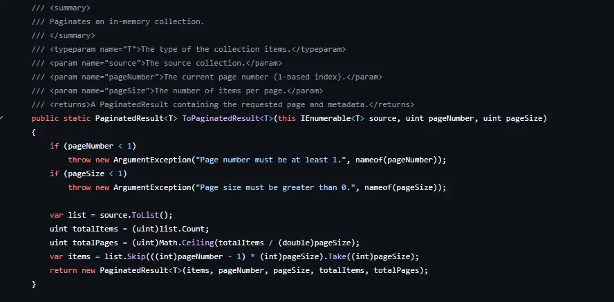
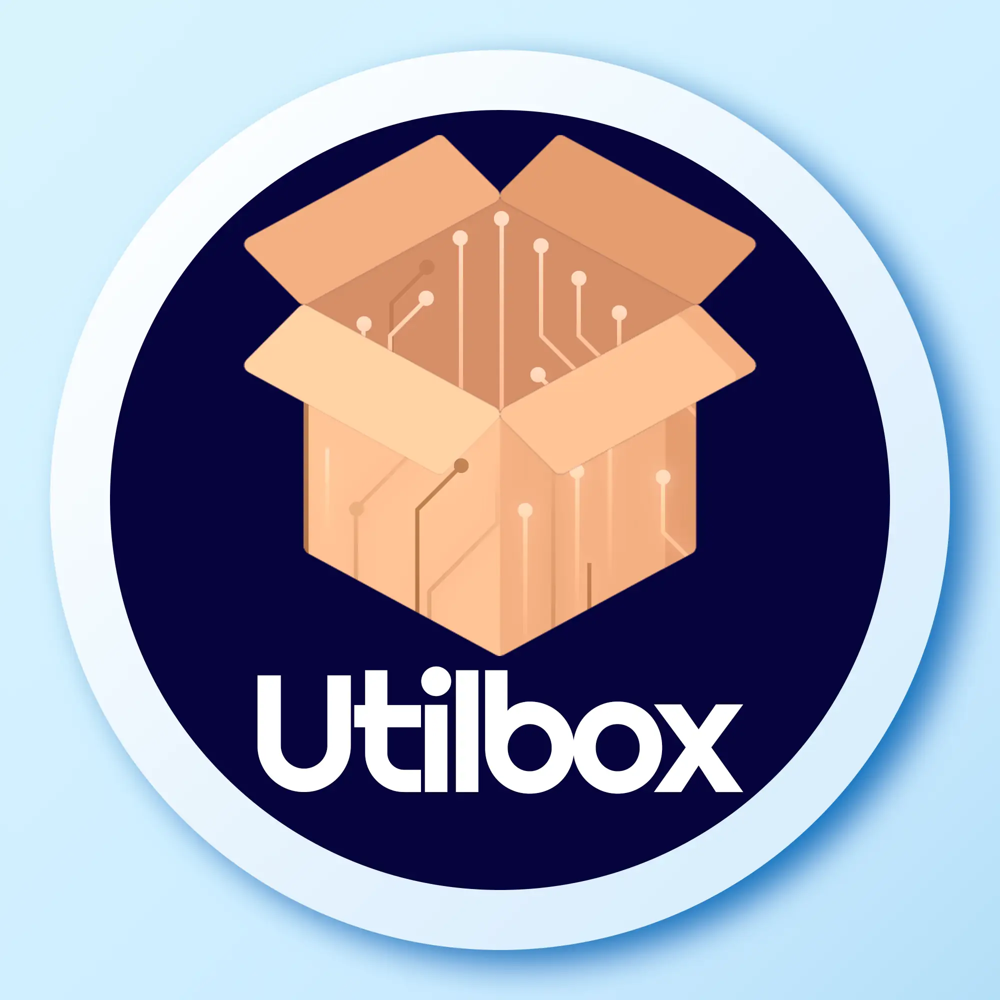
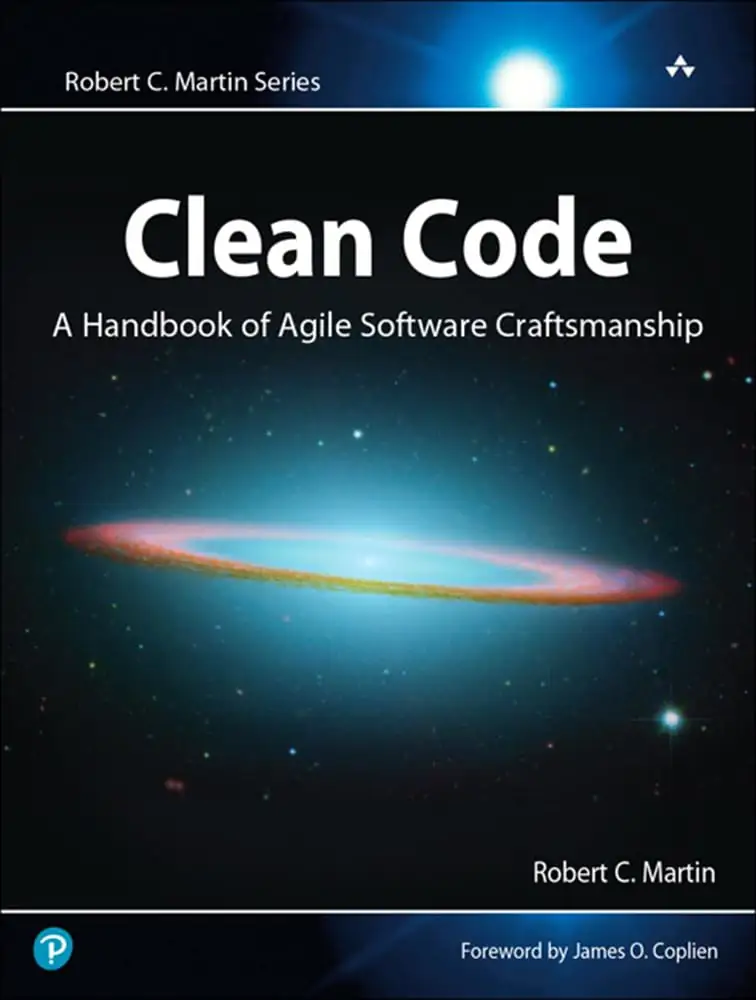
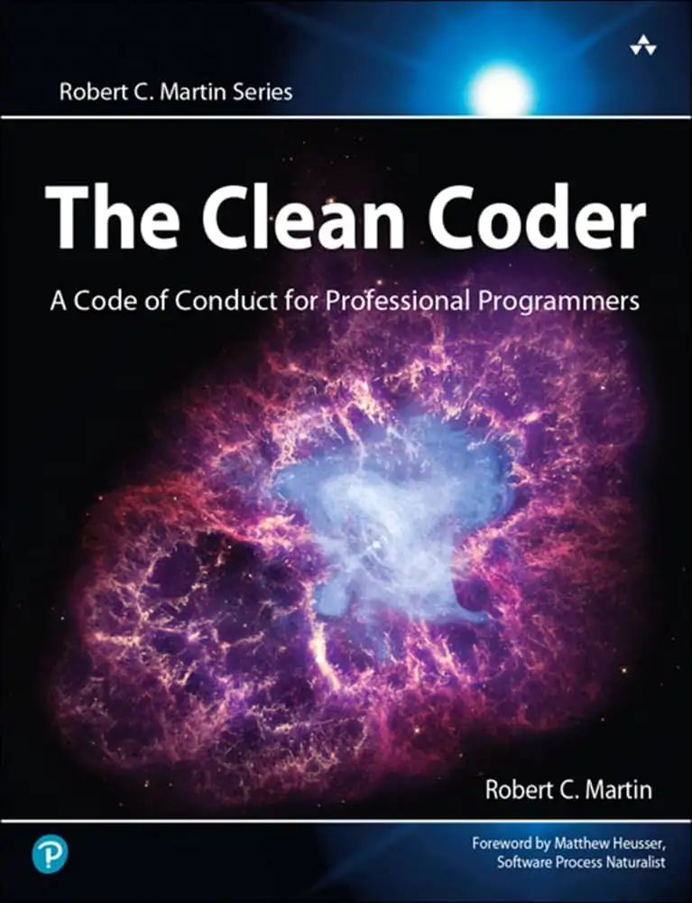
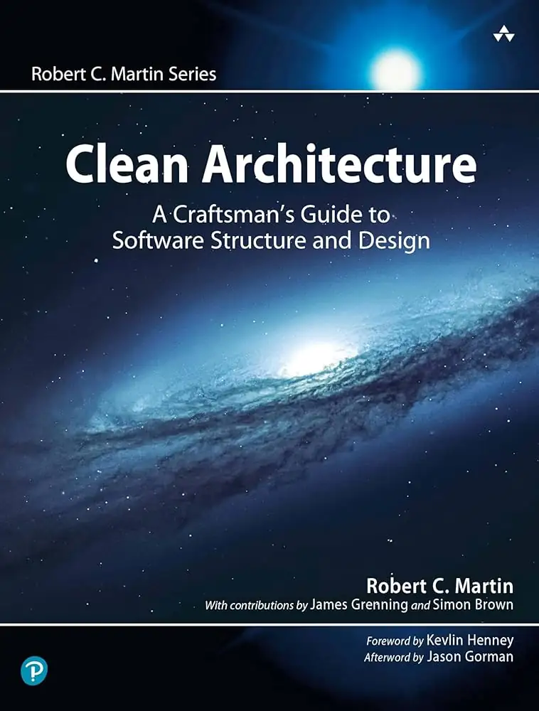
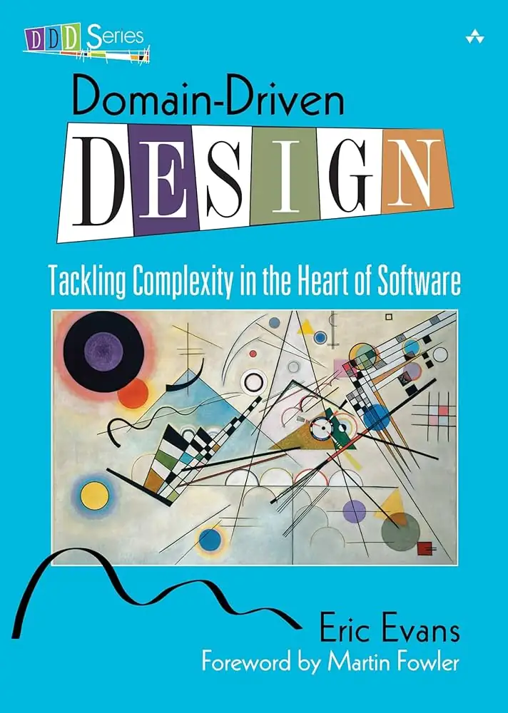
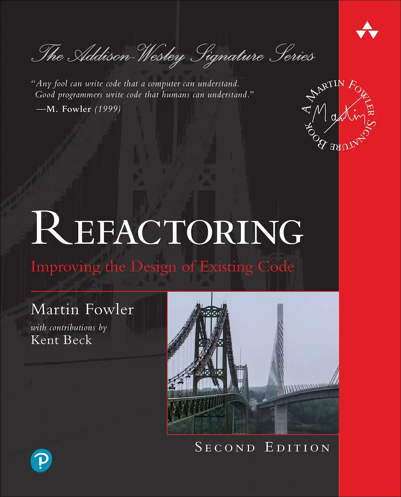
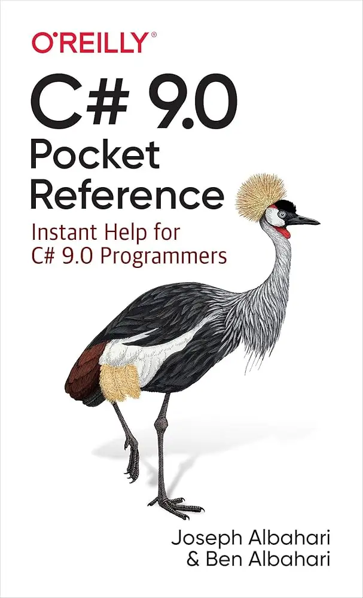

Sobre mim
Engenheiro de Software Sênior .NET & Full-StackOlá, sou Rafael, um engenheiro de software sênior com mais de 8 anos de experiência, especializado em desenvolvimento .NET e arquitetura de software. Sou apaixonado por construir aplicações escaláveis e eficientes e por solucionar desafios complexos que ajudem na melhoria contínua de minhas habilidades. Sou um profissional com propósito e sólida experiência no desenvolvimento de sistemas empresariais complexos. Sou comprometido com práticas de código limpo e princípios SOLID, e possuo um histórico de entrega de soluções escaláveis e de alto desempenho.
Matriz de Habilidades Técnicas
Stack OverviewBackend Core
Arquitetura & Padrões
Bancos de Dados & Storage
DevOps & Cloud
Frontend & UI
Carreira & Experiência
TimelineEngenheiro de Software Sênior
Modernização de módulos fiscais de ERP em larga escala, adequação à reforma tributária brasileira e otimização de alta performance em banco de dados.
- Atuo na manutenção e modernização de um dos ERPs mais robustos e amplamente utilizados do Brasil, com forte foco em módulos fiscais e em sistemas impactados pela reforma tributária brasileira.
- Trabalho com xHarbour (Clipper), contribuindo para a migração de funcionalidades desenvolvidas com ferramentas visuais legadas (CoreBuilder) para arquiteturas web modernas, com grande ênfase em performance, estabilidade e compatibilidade retroativa.
- Contribuo ativamente para a otimização de consultas em banco de dados, incluindo análise de planos de execução, criação e ajuste de índices e refinamento de queries críticas de performance, sempre considerando ambientes de produção em larga escala.
- Atuo próximo aos processos fiscais e de gestão empresarial, incluindo controle de estoque, compras, vendas e fluxos tributários, garantindo conformidade com regras de negócio, requisitos legais e confiabilidade geral do sistema.
Desenvolvedor .NET Sênior
Evolução de arquitetura bancária de monolito para microsserviços, com AWS Lambda, Terraform e mecanismos antifraude em tempo real.
- Atuei na modernização de código legado para um banco digital brasileiro em crescimento, contribuindo para a evolução de uma arquitetura monolítica para padrões baseados em microsserviços.
- Participei da migração e reestruturação de componentes do sistema, apoiando a adoção de soluções escaláveis, resilientes e orientadas à nuvem, adequadas a um ambiente financeiro de alta disponibilidade.
- Contribuí na implementação e manutenção de AWS Lambda e na definição de infraestrutura como código utilizando Terraform, promovendo automação e maior confiabilidade dos ambientes.
- Também atuei com filas de mensagens e eventos assíncronos, além da implementação e integração de mecanismos de segurança (antifraude), atendendo a requisitos críticos de segurança e compliance do setor financeiro.
Desenvolvedor .NET Especialista
Liderança na estratégia de migração técnica de ~50 módulos de ERP educacional público de WebForms para .NET 8.
- Integrei uma squad responsável pela modernização de um ERP do setor público voltado à gestão educacional municipal, contribuindo para a migração de uma arquitetura legada em .NET Framework (WebForms) para .NET 8.
- Atuei na análise técnica de recursos, funcionalidades e regras de negócio entre os módulos do sistema, apoiando a definição e execução do plano de migração, com foco em estabilidade, continuidade e evolução de longo prazo.
- Participei ativamente da migração de aproximadamente 50 módulos do ERP, realizando refatoração e limpeza de código legado, aplicando Clean Code e princípios SOLID, e alinhando o código a novos padrões arquiteturais e técnicos.
- Atuei na mitigação de riscos de segurança, melhoria da performance de consultas ao banco de dados e desacoplamento de dependências entre classes, aumentando a manutenibilidade, testabilidade, performance e segurança da plataforma.
Engenheiro de Software Sênior
Arquiteto central do ecossistema de clínicas em âmbito nacional, integrações third-party, reestruturação institucional e algoritmo inteligente de agendamento.
- Integrei a equipe de evolução contínua de um sistema de gestão de ponta para uma rede de clínicas de depilação a laser em rápida expansão, contribuindo significativamente para o aumento da eficiência operacional.
- Participei ativamente de decisões de design de sistema, arquitetura e regras de negócio, atuando como membro central do direcionamento do produto, contribuindo com propostas técnicas baseadas em experiência prática e fundamentos acadêmicos.
- Liderei integrações com diversos serviços de terceiros, modernização de arquitetura legada, otimização de interações com banco de dados e melhorias de experiência e performance do sistema para suportar o crescimento do negócio.
- Reestruturei o site institucional principal com tecnologias modernas em .NET e suporte a múltiplos idiomas, melhorando performance, SEO e experiência do usuário.
- Otimizei o mecanismo de agendamento com parâmetros personalizados, reduzindo significativamente o tempo de operação dos clientes, diminuindo reclamações e melhorando a utilização do tempo do negócio.
Desenvolvedor .NET Pleno
Projeto arquitetural do zero com Clean Architecture e DDD para franquias de procedimentos estéticos, com controle de estoque e APIs de sincronização.
- Liderei o desenvolvimento de um novo sistema de gestão para uma franquia de clínicas de procedimentos estéticos, simplificando agendamentos, controle de estoque e operações gerais.
- Projetei a arquitetura do sistema, estrutura de banco de dados, tecnologias e stack do projeto, utilizando Clean Architecture, DDD, .NET Core e princípios SOLID, garantindo escalabilidade, manutenibilidade e segurança a longo prazo.
- Gerenciei uma pequena equipe de desenvolvedores freelancers, distribuindo tarefas, revisando código e assegurando a aderência às melhores práticas e objetivos de negócio.
- Desenhei APIs seguras para sincronização de dados em tempo real entre múltiplas unidades e a franqueadora, centralizando dados e otimizando processos.
- Desenvolvi um sistema de controle de estoque e vendas de insumos, melhorando visibilidade de inventário e reduzindo custos operacionais.
Desenvolvedor .NET Pleno
Desenvolvimento de software de gestão para planos de saúde com agenda médica interativa multivisualização e conformidade de prontuários.
- Liderei o desenvolvimento de um sistema de gestão totalmente novo para uma franquia de planos de saúde, automatizando operações clínicas, prontuários médicos e agendamentos.
- Projetei a arquitetura do sistema, estrutura de banco de dados, tecnologias e stack do projeto.
- Desenvolvi uma agenda médica interativa com múltiplas visualizações e sincronização em tempo real, aumentando significativamente a eficiência de agendamento e a coordenação das equipes médicas.
- Gerenciei uma equipe de desenvolvedores freelancers, garantindo a entrega de soluções escaláveis e de alta qualidade.
- Implementei boas práticas de segurança, incluindo armazenamento seguro de dados e integrações seguras via API, garantindo conformidade com regulamentações da área da saúde.
Desenvolvedor .NET Júnior
Aprimoramento de sistema de ensino técnico, integrações com gateway de pinpad para PDV e sistema de alocação de turmas.
- Atuei na melhoria de um sistema de gestão para uma rede de escolas de capacitação na área da construção civil, otimizando fluxos operacionais, acelerando processos e aumentando a adesão aos cursos.
- Otimizei consultas e relatórios em banco de dados, reduzindo o tempo de execução e melhorando a eficiência na recuperação de dados.
- Desenvolvi integração com gateways de pagamento via pinpad, método amplamente utilizado pelo público-alvo, aumentando as vendas.
- Implementei um processo de agendamento em grupo para controle de turmas, salas, professores e alunos, evitando conflitos de horários e melhorando a disponibilidade.
Projetos em Destaque
Open Source

Utilbox
Uma coleção de bibliotecas de utilidades em C# projetadas para simplificar tarefas comuns de desenvolvimento. Com pacotes individuais para lidar com datas, enums, resultados, strings e paginação, o Utilbox é feito para desenvolvedores que desejam escrever código sem a necessidade de reinventar a roda.
dotnet add package Utilbox
Formação Acadêmica
Academic DegreesEngenharia da Computação
Iniciação Científica: Utilização de galvanômetro como componente eletrônico em harpas laser.
Trabalho de Conclusão: Estudo comparativo do algoritmo de rastreamento de caminho A* versus algoritmo genético de aprendizado de máquina na automação de robôs de armazém.
Técnico em Informática
Trabalho de Conclusão: Software empregado em automação de bancas de jornais.
Cursos & Especializações
CredentialsModelando Domínios Ricos com Domain-Driven Design
Software Architecture & System Design Practical Case Studies
Fundamentos & Recursos Avançados do C#
Fundamentos do Entity Framework Core
Fundamentos de Microsserviços e Sistemas Distribuídos
Aplicações Multi-Tenant com Entity Framework Core
Idiomas
FluencyPortuguês Brasileiro
Nativo
Inglês
Fluente (Profissional)
Prateleira Técnica
LiteratureObras fundamentais da engenharia de software que fundamentam minhas decisões arquiteturais, filosofia de código e artesanato técnico diário.






Filosofia & Interesses
VisionIA como Multiplicador de Força
A IA é uma ferramenta transformadora. Assim como o CAD revolucionou o projeto estrutural na engenharia civil e mecânica, aceleradores de IA permitem que engenheiros de software concentrem seu esforço no design de sistemas, modelagem de domínio e resiliência arquitetural.
Abraço a IA como multiplicadora de produtividade na prototipagem e tarefas repetitivas, sem jamais abrir mão do pensamento crítico, da compreensão profunda das regras de negócio e da auditoria de segurança.
Tecnologia & Artesanato
Sou apaixonado por arquitetura de software, sistemas distribuídos e aprendizado contínuo. Mantenho constante curiosidade sobre hardware e software, dedicando projetos pessoais a automações com agentes de IA locais e arquiteturas web modernas.
Rigor Científico
A ciência e a física, especialmente a astronomia e matemática, inspiram minha abordagem de engenharia. Traduzo esse rigor acadêmico para o código aplicando padrões comprovados e processos arquiteturais estruturados.
Comunicação Transparente
Comunicação clara e empática é a chave para equipes de engenharia de alta performance. Valorizo code reviews construtivos, discussões técnicas embasadas e escuta ativa.
Liderança Colaborativa
Trabalho com entusiasmo em equipes multidisciplinares com objetivos de crescimento compartilhado. Respeitar visões técnicas distintas e alinhar engenharia com o negócio são pilares do meu dia a dia.
Contato e Redes
Get in TouchVamos construir soluções excepcionais juntos.
Seja para debater arquitetura de software, ecossistema .NET, projetos de código aberto ou posições estratégicas de engenharia sênior, fique à vontade para me contatar.